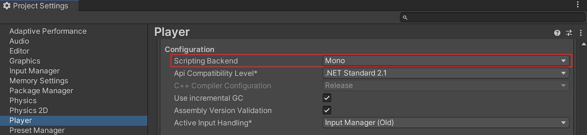

The Mono scripting back end is Unity’s fork of the open source Mono project. Mono is a mature, cross-platform .NET runtime that powers Unity’s Editor and Players on compatible platforms. It offers fast iteration and good tooling, but has lower runtime performance than IL2CPPA Unity-developed scripting back-end which you can use as an alternative to Mono when building projects for some platforms. More info
See in Glossary and isn’t aligned with the newest .NET features.
Mono uses just-in-time (JIT) compilation to convert your C# code into machine code at runtime. Mono manages the lifecycle of managed objects, handles code reload, and performs automatic garbage collection of out-of-scope objects with the Boehm-Demers-Weiser garbage collector. The garbage collector’s behavior can be configured to some extent. For more information, refer to Garbage collection modes.
Mono supports the debugging of managed code. For more information, refer to Debugging C# code in Unity.
To start the build process, open the Build Profiles window (Menu: File > Build Profiles) and select Build.
You can change the scripting back end Unity uses to build your application in one of two ways:
Through the Player SettingsSettings that let you set various player-specific options for the final game built by Unity. More info
See in Glossary menu in the Editor. Perform the following steps to change the scripting back end through the Player Settings menu:
You can also open the Player Settings menu from the Build Profiles window; go to File > Build Profiles and click on the Player Settings tab.
Through the Editor scripting API. Use the PlayerSettings.SetScriptingBackend property to change the scripting back end that Unity uses.

Both the Mono and IL2CPP scripting back ends require a new build for each platform you want to target. For example, to support both the Android and iOS platforms, you need to build your application twice and produce two binary files, one for Android and one for iOS.
The Unity Editor embeds Mono, so your C# code is managed by Mono and is subject to Mono’s constraints when running in the Editor’s Play mode. A key aspect of this is that entering and exiting Play mode or recompiling scriptsA piece of code that allows you to create your own Components, trigger game events, modify Component properties over time and respond to user input in any way you like. More info
See in Glossary trigger AppDomain reloads, which resets static state. You can configure how Unity enters Play mode and turn off domain reloading to speed up iteration, but then your code must handle the reset of static state. For more information, refer to Enter Play mode with domain reload disabled.
Mono and IL2CPP use the same base .NET class library so many performance issues and best practices are applicable to both. However, in the Mono context consider the following:
Task with Unity APIs.
Awaitable class as a more efficient alternative to .NET Task. For more information refer to Asynchronous programming with the Awaitable class.DateTime, TimeZoneInfo, and CultureInfo can differ from Windows .NET behavior. Make sure to test globalized, culture-specific code on target platforms.In suitable projects, you can improve the runtime performance of your project by using the Burst compiler alongside Mono to compile compatible sections of your code to highly optimized machine code. For more information, refer to Burst compilation.